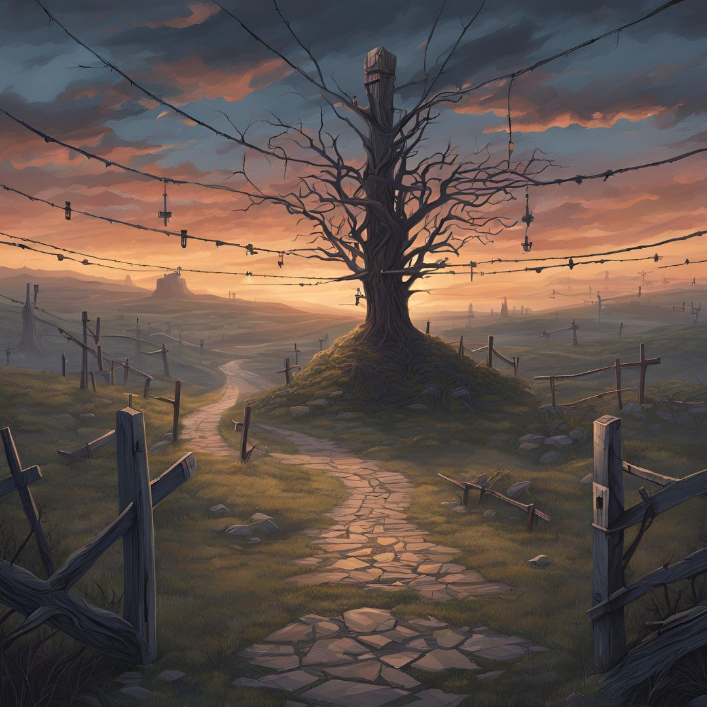

Welcome to your adventure! The time machine is malfunctioning. What do you do?

Addendum
Working Process: The game "Lost Realms: The Time Traveler's Paradox" was designed as an interactive narrative game where the player makes decisions to navigate through a time-traveling adventure. This structure was built on the concatenation of HTML, CSS, and JavaScript, with the JavaScript controlling the storyline logic. Every individual player's decisions result in various directions controlled by the JavaScript objects. The objects hold story data such as text, choices, and images that will help them transition smoothly between each scenario. When the game is loaded, it loads to a homepage where one has two options: either the beginning of the game or the addendum. Once the game has started, options pop up, guiding the continuation of the story. The player meets one of the various pre-defined endings based on his choices. Choices: The philosophy leading the design of the game has been simplicity and player engagement. We focused on a clean user interface without distractions to put the story and choices at the center. The retro-pixel font with a color palette has been chosen to give this game a nostalgic yet modern feel, evoking classic text-based adventure games. The use of images for each scenario raises immersion and gives players a visual to base the situation they're in. Button choices for the player's interactions keep the game easily understandable and accessible, with no need for any convoluted controls. Additional background images were added for different sections-such as the home page, game, and addendum-along with slight animations to give more texture to the aesthetics . Challenges and Solutions: One of the bigger challenges in building this was how to efficiently structure the game logic. The sheer number of decision points and different outcomes made handling the branching narrative somewhat cumbersome. To solve this, we laid out the storyline into modular JavaScript objects mapping each choice to its consequence. This dramatically improved code readability, along with making it easier to expand the story with new scenarios and their respective outcomes. Other challenges included making the game responsive through various devices. Using media queries within the CSS, we adapted the layout and styling for small screen sizes so that text and buttons are still accessible on mobile devices. Integral to this process has been both testing user interactions with the code and the debugging of unusual behavior in the JavaScript functions. Insights Gained: Modularity and maintainability of code: During this whole development process, we learned how important it is to have modular code and maintainability. Decomposing the story into smaller, reusable JavaScript objects eased the development process by reducing redundancy. Testing with users also helped us to refine gameplay flow and user experience, thus emphasizing feedback in the development process. The other important lesson learned was to find a balance between functionality and aesthetics in order to provide a satisfying interactive experience.